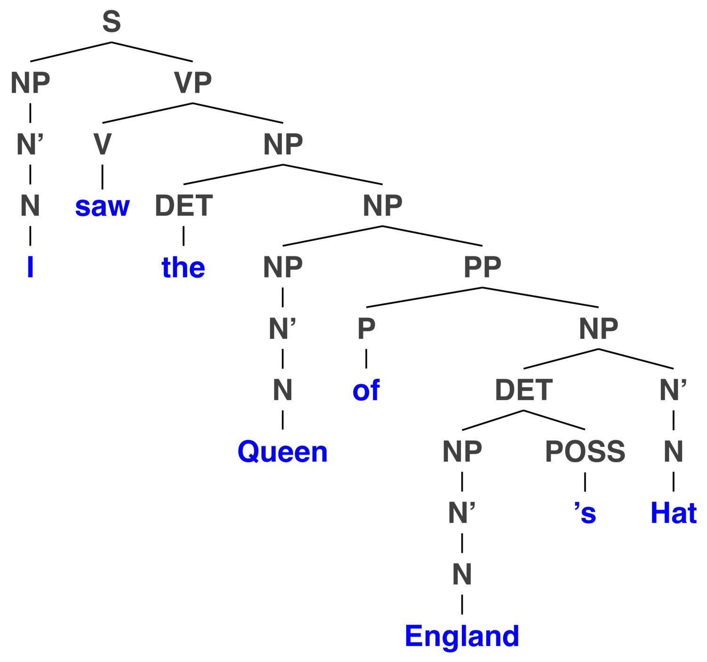
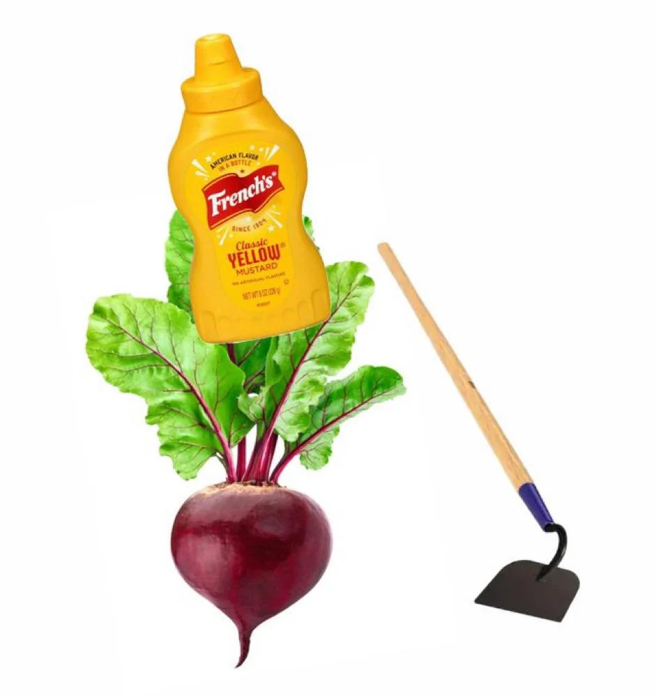
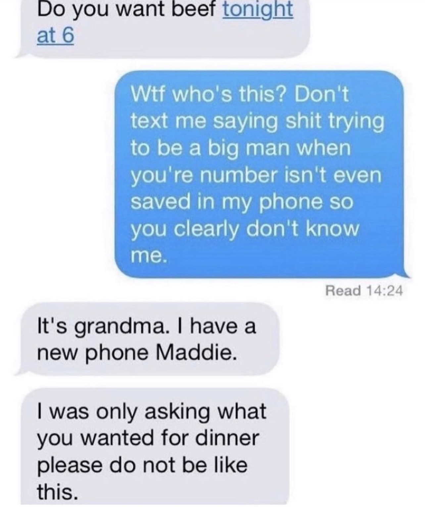
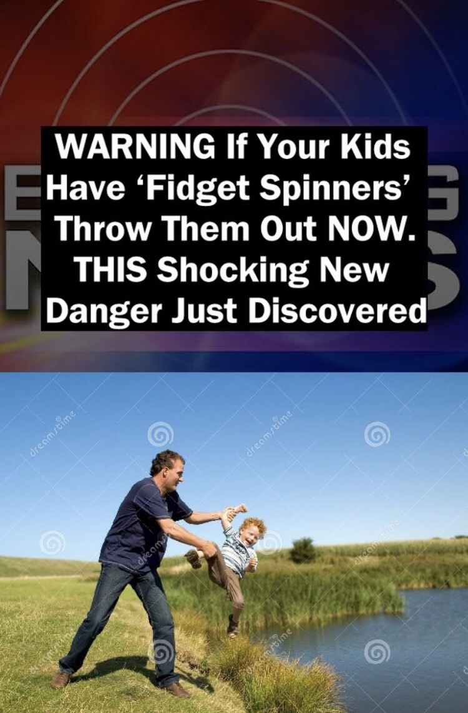
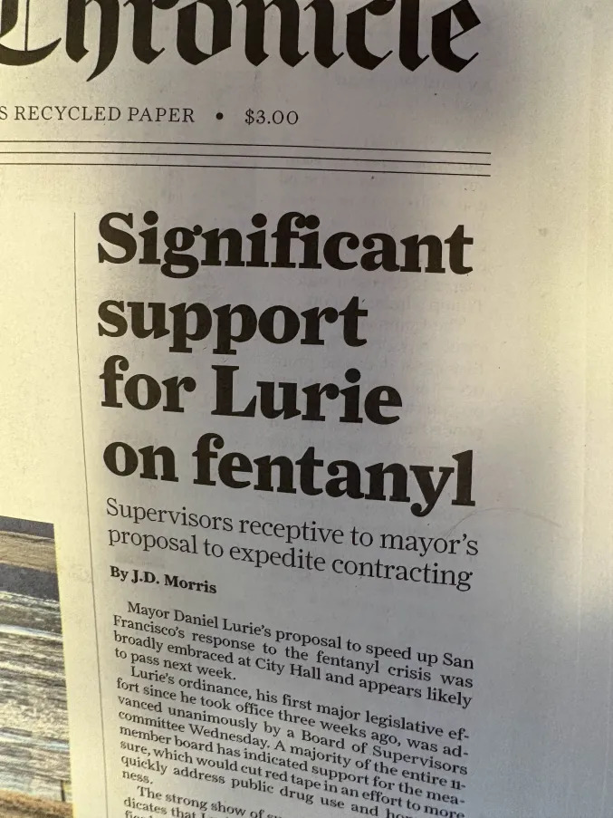

# Semantics: What does it all mean? ### Matt Zaslansky - LIGN 101 --- ### So far, we've been focused on structure - How are sounds made? - How do sounds pattern? - How are words made? - How do words pattern? --- ### It's time to start thinking about what it all means - Quite literally. --- ## Semantics The study of meaning in Language --- ## Pragmatics The study of meaning in conversational context --- ### We're going to spend some time with both of these - Today, we'll focus on meaning in a greater sense - Next time, word meanings - After that, we'll talk about Pragmatics --- ### Today's Plan - Truth in Sentences - Ambiguity - Entailment - Connotation and Denotation - Prototypes --- # Truth in sentences --- ### Sentences can be true, or false, with reference to the world - Since words have meanings, and those meanings can be defined logically... - We can evaluate the logical truth of a sentence. --- ### Sometimes, it's easy --- ### Tautology - All linguists are linguists. - Every bachelor is unmarried. - A circle is circular. - The long cat is long. - *All tautologies are true!* --- ### Contradictions - A circle is triangular. - French people are not French. - Will is tall and short. - *All contradictions are false!* --- ### Meaningless sentences - "Colorless green ideas sleep furiously" - *Meaningless sentences lack meaning!* --- ### Non-Statement Sentences - **Commands:** Turn in your homework! - **Questions:** Have you turned in your homework? - **Greetings:** Welcome to UC San Diego! - *These can't be evaluated as they're not making claims* --- ### Speech Acts / Performative Language - I sentence you to three weeks of probation. - I now pronounce you married. - *More on these in Pragmatics!* --- ## Declarative sentences can thus be shown to be true or false. --- ### "Matt waved" - There is a set of people who waved. - If Matt is in that set, this sentence is true. - If Matt is not, this sentence is false. --- ### Compositional Semantics - Syntactic structure, coupled with understanding of meaning of individual phrases, allows the determination of meaning via rules. - This is *really* cool stuff. --- ### For compositional semantics, LIGN 130 and LIGN 230 <img class="r-stretch" src="img/plug.jpg"> --- ### Sometimes, it's hard to figure out what the meaning is --- # Ambiguity <img class="r-stretch" src="humorimg/ambiguity.jpg"> --- ### Three kinds of Ambiguity - Syntactic/Structural Ambiguity - Lexical Ambiguity - Semantic Ambiguity --- ## Structural/Syntactic Ambiguity - "I'm not sure what syntactic structure you're going for there" --- ### "I saw the man with the telescope" <img class="r-stretch" src="diagrams/tree_manwithtelescope1.jpg"> --- ### "I saw the man with the telescope" <img class="r-stretch" src="diagrams/tree_manwithtelescope2.jpg"> --- ### "I saw the Queen of England's Hat" - Note, this requires two new rules, N' -> N' PP and DET -> NP POSS <img class="r-stretch" src="diagrams/tree_queenenglandshat1.jpg"> --- ### "I saw the Queen of England's Hat"  --- <img class="r-stretch" src="img/binladen_mask.jpg"> --- ## Lexical Ambiguity - "I'm not sure what sense of the word you're using" --- ### Word Sense - The same sequence of phonemes can have multiple meanings - This is known as 'polysemy' - The "sense" is the particular meaning in use at a moment. - "Spam", "Lit", "Broke", "Turn", "Lemon" --- ### Lexically Ambiguous Sentences - "He sold her a lemon" - A bad car, or a citrus fruit. - "Stop sending me spam" - Spiced ham, or commercial email - "Will cut up the center of the paper" --- ### The only time a stadium full of people chanted a semantic ambiguity - *"Tryna strike a chord and it's probably A-Minor"* - Kendrick Lamar - 'Not Like Us' ---  --- <img class="wide" src="humorimg/huge_metal_fan.jpg"> --- <img class="r-stretch" src="humorimg/go_long.jpg"> ---  --- ## Semantic Ambiguity "I know the structure, and I know the senses, but there are multiple readings" --- ### "John kissed his wife, and so did Alex" - Two people kissing two wives, or one wife kissing two people? - "John kissed Amy, and so did Alex" is not ambiguous - "John kissed his wife, and Alex kissed his own wife" --- ### "Bob and Joe are married." - "Bob and Joe are married to each other" - "Bob and Joe are married, but Sean, Mike, and Adam are single" --- ### "Every student hates an Instructor." - "Every student hates at least one instructor that they've had, whoever that may be." - "Every student hates one instructor, and his name is Matt Zaslansky" ---  ---  --- ### "somebody stole our stapler, and none of the electrics appear to be working." --- ### There are other types of ambiguity, but these are the three you'll want to know - Lexical Ambiguity - "I can't figure out **what word sense** is being used." - Syntactic Ambiguity - "I can't figure out **which syntactic structure** is intended." - Semantic Ambiguity - "I can't figure out **which of several interpretations** you intend without more context." --- <section class="clicker"></section> ### "I see Kim and Latasha eating ice cream... Wait, I think she dropped her spoon." A) Lexical Ambiguity B) Syntactic Ambiguity C) Semantic Ambiguity --- ### "I see Kim and Latasha eating ice cream... Wait, I think she dropped her spoon." A) Lexical Ambiguity B) Syntactic Ambiguity C) <correct>Semantic Ambiguity</correct> --- <section class="clicker"></section> ### "I poked the bear with a stick" A) Lexical Ambiguity B) Syntactic Ambiguity C) Semantic Ambiguity --- ### "I poked the bear with a stick" A) Lexical Ambiguity B) <correct>Syntactic Ambiguity</correct> C) Semantic Ambiguity --- <section class="clicker"></section> ### "John loves his mother, and so do I" A) Lexical Ambiguity B) Syntactic Ambiguity C) Semantic Ambiguity --- ### "John loves his mother, and so do I" A) Lexical Ambiguity B) Syntactic Ambiguity C) <correct>Semantic Ambiguity</correct> --- <section class="clicker"></section> ### "I saw this killer robot circling General Dynamics" A) Lexical Ambiguity B) Syntactic Ambiguity C) Semantic Ambiguity --- ### "I saw this killer robot circling General Dynamics" A) <correct>Lexical Ambiguity</correct> B) Syntactic Ambiguity C) Semantic Ambiguity --- ### So, that's when meaning isn't clear. - Let's talk about the opposite! --- # Entailment --- ## Entailment When the use of a word involves logical and necessary conclusions which can be drawn - "If X is true, then necessarily, Y is true" - You cannot imagine a situation in which X being true does not make Y true --- ### Sam broke the red toy and the blue toy. **Entails...** - The red toy is broken - The blue toy is broken - Sam broke two toys. - Sam is capable of breaking toys. --- ### Sam broke the red toy and the blue toy. **Does not entail...** - Sam intentionally broke the toys - Sam broke the red toy first. - Sam likes breaking toys. - They were Sam's toys --- ### Mary passionately kissed Blake **Entails...** - Mary kissed Blake - Blake was kissed by Mary. - Blake was kissed. - Mary touched Blake with her lips. --- ### Mary passionately kissed Blake **Does not entail...** - Mary loves Blake. - Mary married Blake. - Blake kissed Mary. - Mary kissed Blake many times. - Mary did *not* kiss Blake. --- ### X entails Y does not mean that Y entails X! - "Mary passionately kissed Blake" entails "Mary kissed Blake" - "Mary kissed Blake" **does not** entail "Mary passionately kissed Blake". - Mary could have offered a reluctant and chaste peck on the cheek --- ### Entailment *does not* depend on conversational context or situations - "John left the room" **does not** entail that the room is empty afterwards. - "Mary and John were in the room. John left the room" - "John was alone in the room. John left the room." - Entailment is true **only** if you cannot imagine a situation where it could be false. - "Mary kissed Blake" can never not entail that Blake was kissed by Mary. - If it depends on context, it's *implicature*. --- <section class="clicker"></section> ### "Roberta hit Carlos using a rubber chicken". Which of the following is *not* entailed? A) Carlos was hit with a rubber chicken. B) Roberta had a Rubber Chicken C) Roberta dislikes Carlos D) Roberta was within rubber-chicken-hitting distance of Carlos E) Roberta hit Carlos --- ### "Roberta hit Carlos using a rubber chicken". Which of the following is *not* entailed by this sentence? A) Carlos was hit with a rubber chicken. B) Roberta had a Rubber Chicken C) <correct>Roberta dislikes Carlos</correct> D) Roberta was within rubber-chicken-hitting distance of Carlos E) Roberta hit Carlos --- <section class="clicker"></section> ### "Demetrius saw the kid who was walking down the street". Which of the following *is* entailed by this sentence? A) Demetrius was within line-of-sight of the kid B) Demetrius saw a child. C) Demetrius was on the street. D) The kid was walking. E) Demetrius was older than the kid. --- ### "Demetrius saw the kid who was walking down the street". Which of the following *is* entailed by this sentence? A) Demetrius was within line-of-sight of the kid B) Demetrius saw a child. C) Demetrius was on the street. D) <correct>The kid was walking.</correct> E) Demetrius was older than the kid. --- ### Making assumptions when evaluating entailment is baaaaaaaaad --- ### Understanding entailment requires you to understand the meaning of words - "Nathan is a District Attorney" entails that "Nathan is an Attorney" - "Nathan is a District Attorney" entails that "Nathan is a Lawyer" - "Nathan is an attorney" **does not** entail that "Nathan is a district attorney" - "Nathan is an attorney" **does not** entail that "Nathan is a lawyer" - All of these terms are system specific - In a different legal system, the terms might be defined differently --- ### ... and meaning is complicated af --- # Connotation and Denotation: Shades of Meaning --- ### There are many ways to say the same thing - Words that 'mean the same thing' are called 'synonyms' --- ### Synonyms - "Sofa" and "Couch" - "Pop" and "Soda" - "Sick" and "Ill" - "Police Officer" and "Cop" --- ### Synonyms can be tested - "All sofas are couches, and all couches are sofas" - "John purchased a car, therefore he bought a car" - "All sick people are ill, and all ill people are sick" - "All police officers are cops, and all cops are police officers" --- ### Let's look at another set of words that 'mean the same thing' - "Cheap" and "Inexpensive" - "Strong-willed", "Stubborn", and "Pig-Headed" - "Study" and "Scrutinize" - "curious" and "nosy" - "vintage" and "outdated" and "antique" --- ### These words share a *denotation*, but have different *connotations* - "Cheap" and "inexpensive" both mean "costs little money" - ... but it means something different to say "a cheap broom" vs. "an inexpensive broom" - A person can be "strong-willed", "stubborn" or "pig-headed" - ... depending on how angry you are with them at the moment - "She studied the paper" does not mean the same thing as "She scrutinized the paper" - Nobody sells outdated clothing, they sell vintage clothing --- ### These differentiate the 'denotation' of a word, from the 'connotation' - The 'Denotation' is the strict dictionary definition of a word - Cheap and Inexpensive both mean "Something that costs little money" - The 'Connotation' describes the non-definitional, emotional and associative facts about how the word is often used. - These are often value judgements, or links to related concepts - These are facts about usage, more than facts about definition - 'Cheap' implies "Not great", inexpensive doesn't. --- ### Domineering, Pushy, Assertive - **Denotation**: Takes effort to ensure that their perspective and desires are shared and acted upon - Pushy Connotation? - Assertive Connotation? - Domineering Connotation? --- ## Next time - We'll focus on individual word meanings - And we'll start talking about meaning in context - Bring meaning --- <huge>Thank you!</huge>